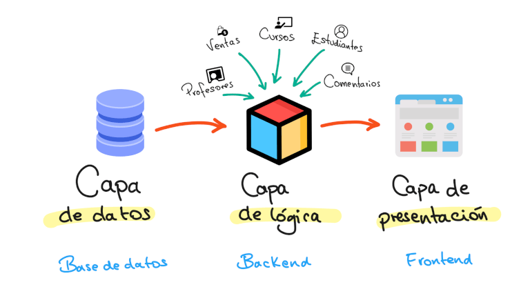
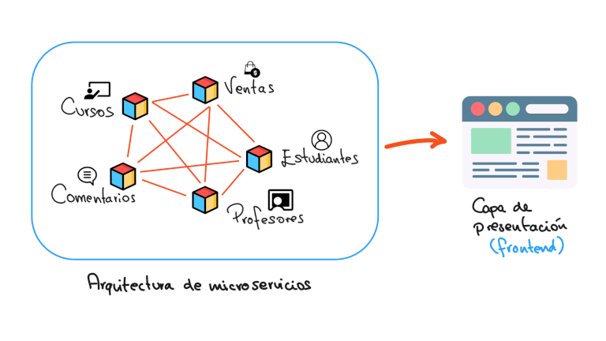

Sistemas |
||
|---|---|---|
| Sistema | Concepto | Imagen |
| Monolítico | Un sistema monolítico es una arquitectura de software donde todas las funcionalidades y servicios de una aplicación se integran en un único programa ejecutable. Es decir, la aplicación se construye como una sola unidad, a diferencia de las arquitecturas microservicios, donde se divide en componentes más pequeños e independientes. |  |
| Microservicios | Un sistema de microservicios es una arquitectura de software donde una aplicación se construye como un conjunto de servicios pequeños, independientes y desplegables individualmente. Cada microservicio se enfoca en una función de negocio específica y se comunica con otros a través de APIs. |  |